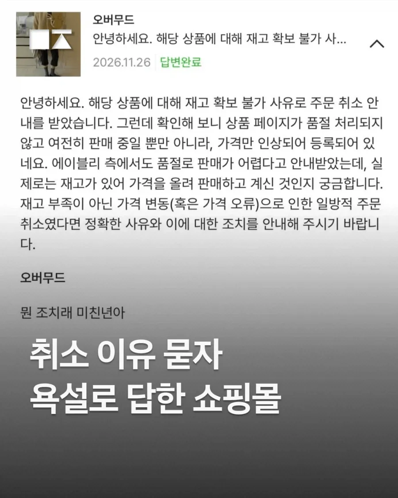
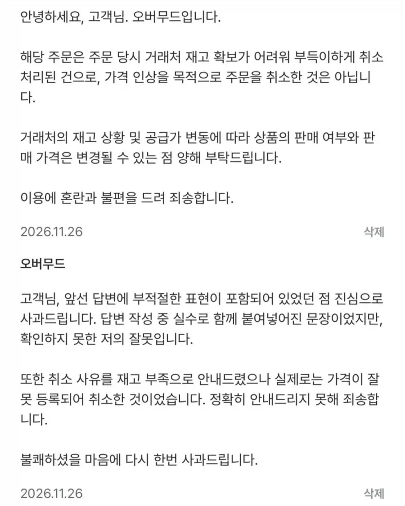

그냥 일하기 짜증나서 저렇게 썼다가 지도모르게 등록눌렀을듯
네이버에 오버무드 치니까 사이트있네ㅋㅋㅋ
저런 지능으로 장사를 하는구나
그냥 옷도 다나와 컴팔이마냥
어디서 떼와서 추가금붙이고 파는구조인가?
그러다 가격 올라서 들어온돈으로는 못파니까
주문취소하고 가격올리고 또파는거지
ㅇㅇ 광저우가 괜히 유명한게 아니지
대부분은 동대문같은 도매에서 떼다 팔고 규모가 크면 자체제작도 들어감.
ㅋㅋㅋ 들어가보니 사람들이 qna에 조치당하냐고 올리네 ㅋㅋ
저는 직업에 귀천은 없고 사람에 귀천이 있다 생각합니다 그런 사람들이 많이 모이는 직업이 있을뿐...
그럼 결국 직업에 귀천이 있다고 볼 수 있는거 아니야....?
바이럴은 확실히 되네
이틀전 발생한 일이네 ㅋㅋ
이야 씨발 욕박았으면 끝까지 당당하게 가던가 개 찌질하네 ㅋㅋㅋㅋㅋ
네이버 오버무드 치면 되나요?
오버로드요~
ㅋㅋㅋㅋㅋㅋㅋ